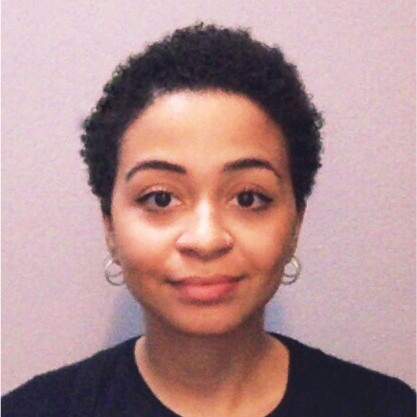

Certified and Licensed Engineer, Milan Order of Engineers
Top10 Young Talents in Italy || Energy, Nova - The Global Top Talent Network
About Me
I am Edeme Darlain, an Energy Policy Analyst specializing in renewable energy systems, geospatial data analysis, and sustainable energy solutions. With a strong background in electrical engineering and experience working with international organizations, I have contributed to numerous projects aimed at improving energy access and efficiency across Africa. I hold a Ph.D. in Electrical Engineering and am a certified engineer with a passion for integrating advanced technologies into energy systems.
My professional experience includes roles such as:
- Africa Energy Policy Analyst at World Energy Outlook, International Energy Agency, Paris, France (02/2022 - Present)
- [REPORT] IEA World Energy Outlook 2022
- [REPORT] IEA Africa Energy Outlook 2022
- [REPORT] Clean Energy Transitions in the Horn of Africa
- [REPORT] IEA Coal in Net Zero Transitions
- Research Fellow at Energy Planning, Polytechnic University of Milan, Milan, Italy (01/2021 - 02/2022)
- [STUDY] Integration of Non-Programmable Renewable Energy in the National Electric System of South Africa
- [PAPER] Holistic geospatial data-based procedure for electric network design and least-cost energy strategy
- Program Manager at Country Energy Programme, COSV (International NGO), Mozambique (01/2019 - 01/2021)
- Junior Consultant at Energy Access, COSV (International NGO), Mozambique (03/2018 - 07/2018)
- Trainee at Corporate Engineering and Sustainability, Autogrill S.p.A., Milan, Italy (08/2017 - 03/2018)
My education includes:
- Ph.D. || Electrical Engineering at Polytechnic University of Milan (2021 - 2024)
- [PATENT] Procedure for territorial subdivision into Potential Energy Communities w.r.t Primary Substations
- [PAPER] GIS approach for modeling the electricity grid of small islands using open-source data in Isola del Giglio
- M.Sc. || ICT for Development at University of Turin (2020 - 2021)
- B.Phil. || Philosophy [paused] at University of Milan (2019 - 2020)
- M.Eng. || Energy for Development at Polytechnic University of Milan (2016 - 2019)
- B.Eng. || Energy Engineering at Polytechnic University of Milan (2012 - 2015)